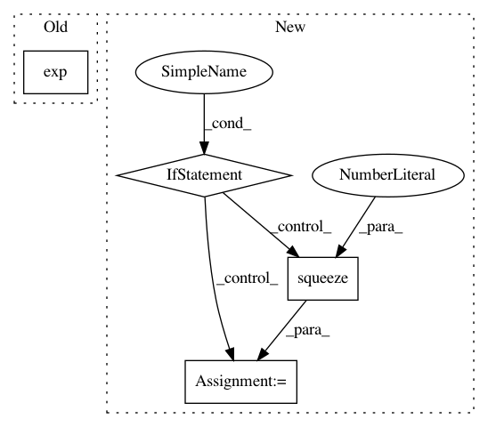

4275d25af066b667a0787f9639b652789f9a0338,gpytorch/likelihoods/multitask_gaussian_likelihood.py,MultitaskGaussianLikelihood,forward,#MultitaskGaussianLikelihood#Any#,57
Before Change
task_var_lv = RootLazyTensor(self.task_noise_covar_factor)
covar_kron_lv = KroneckerProductLazyTensor(task_var_lv, eye_lv)
covariance_matrix = covar + covar_kron_lv
covariance_matrix = add_diag(covariance_matrix, self.log_noise.exp())
return input.__class__(mean, covariance_matrix)
def variational_log_probability(self, input, target):
After Change
noise = self.noise
if covariance_matrix.ndimension() == 2:
if settings.debug.on() and noise.size(0) > 1:
raise RuntimeError("With batch_size > 1, expected a batched MultivariateNormal distribution.")
noise = noise.squeeze(0)
covariance_matrix = add_diag(covariance_matrix, noise)
return input.__class__(mean, covariance_matrix)
In pattern: SUPERPATTERN
Frequency: 3
Non-data size: 4
Instances
Project Name: cornellius-gp/gpytorch
Commit Name: 4275d25af066b667a0787f9639b652789f9a0338
Time: 2018-09-28
Author: gpleiss@gmail.com
File Name: gpytorch/likelihoods/multitask_gaussian_likelihood.py
Class Name: MultitaskGaussianLikelihood
Method Name: forward
Project Name: cornellius-gp/gpytorch
Commit Name: 4275d25af066b667a0787f9639b652789f9a0338
Time: 2018-09-28
Author: gpleiss@gmail.com
File Name: gpytorch/likelihoods/gaussian_likelihood.py
Class Name: GaussianLikelihood
Method Name: forward
Project Name: geomstats/geomstats
Commit Name: 8e0ca26e5571d47425fc73bb3bb118082b742d00
Time: 2021-03-17
Author: nicolas.guigui@inria.fr
File Name: geomstats/geometry/spd_matrices.py
Class Name: SPDMatrices
Method Name: random_uniform